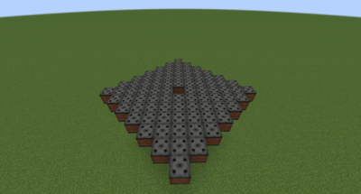
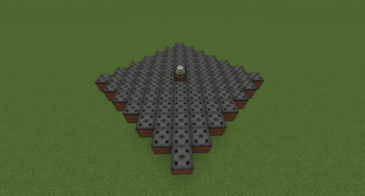
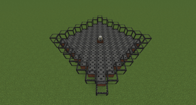
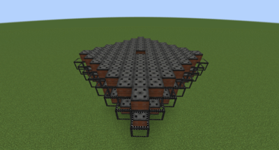
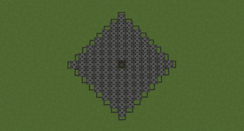
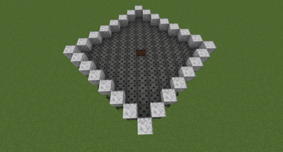

Réacteur à fusion
Construction avancée
Le réacteur à fusion est la source d'énergie ultime de Nuclear Science — plus de 6 MW. Sa construction est complexe et coûteuse. Maîtrisez d'abord le réacteur à fission et le réacteur MS.
Principe de fonctionnement
Le cœur fusionne du Deutérium et du Tritium pour créer du plasma. Ce plasma est confiné par des Électroaimants. Lorsque le plasma se trouve sous un électroaimant surmonté d'eau, il porte cette eau à ébullition, produisant de la vapeur pour les turbines.
| Paramètre | Valeur |
|---|---|
| Production max | > 6 MW |
| Consommation de démarrage | 50 kJ/t à 480 V |
| Combustible | Cellules Deutérium + Tritium |
| Tension des turbines | 480 V |
Étape 1 — Losange d'électroaimants
Construisez un losange de 13×13 d'Électroaimants (opaques ou en verre). Placez le Noyau du réacteur à fusion au centre et retirez le bloc en dessous.

Étape 2 — Anneau latéral
Entourez les côtés du losange 13×13 avec un anneau supplémentaire d'électroaimants.

Étape 3 — Toit
Construisez un second losange 13×13 en guise de toit. Laissez un trou au centre pour le noyau.

Étape 4 — Eau et turbines
Couvrez le dessus des électroaimants avec de l'eau. Le plasma chauffera l'eau pour produire de la vapeur. Placez des Turbines à vapeur au-dessus de la surface de l'eau.

Étape 5 — Alimentation électrique
Le réacteur nécessite 50 kJ/t à 480 V pour démarrer. Une fois lancé, vous pouvez reboucler la sortie des turbines vers le réacteur pour le maintenir en fonctionnement.
Astuce — Démarrage
Connectez un câble au sommet ou au bas du noyau. Une fois que les turbines produisent assez, rebouclez leur sortie vers le réacteur pour l'auto-alimenter.

Étape 6 — Ajout du combustible
Faites un clic droit avec une Cellule de Deutérium ou de Tritium sur le noyau pour l'alimenter. Utilisez le trou laissé en bas pour y accéder facilement.
Obtenir du Tritium
Le tritium se produit dans le réacteur à fission en plaçant des cellules de deutérium dans le cœur actif. Plus le réacteur est chaud, plus la conversion est rapide.
